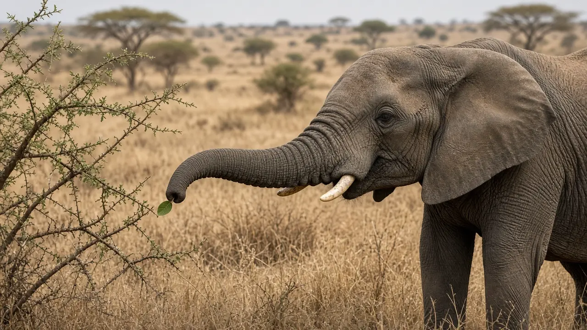

How smart are elephants?
Elephants have the largest brain of any living land animal and, by one careful count, more neurons than any other land mammal studied: about 257 billion of them. That sounds like a clear winner for intelligence, but it is not that simple. Almost all of those neurons, 97.5%, sit in the cerebellum, the part of the brain most linked to movement, while the elephant's cerebral cortex, the region most linked to advanced thinking, actually holds fewer neurons than a human cortex. Here is what the numbers show, and what they do not.
The short answer
By raw numbers, an elephant brain is extraordinary. It weighs about 4.6 kg, roughly three times heavier than a human brain, and in 2014 a team led by neuroscientist Suzana Herculano-Houzel counted about 257 billion neurons inside an African elephant brain, about three times the average human total of 86 billion. If total neuron count alone decided intelligence, elephants would beat humans easily. But the same study found that 97.5% of those neurons, 250.7 billion of them, sit in the cerebellum, a structure mostly involved in movement rather than the kind of thinking people usually mean by "smart." The elephant's cerebral cortex, more closely tied to reasoning and awareness, actually has fewer neurons than the human cortex. Brain size and neuron count turn out to be a much more complicated story than "bigger is better."
How big is an elephant's brain, and how many neurons does it hold?
The elephant brain is the largest of any living land animal, and Herculano-Houzel and colleagues measured one African elephant brain at 4618.6 g, not counting the olfactory bulb. That same brain held 257.0 billion neurons in total, about three times the 86 billion neurons that Frederico Azevedo and colleagues previously counted in an average human brain. On brain weight and total neuron count, the elephant wins by a wide margin. For more on how an elephant's brain fits with the rest of its body, see our elephant anatomy page.
Why so many neurons sit in the cerebellum
Almost all of the elephant's neurons, 97.5% (250.7 billion), are packed into the cerebellum, making the elephant an outlier among mammals for cerebellar neuron count. Herculano-Houzel and colleagues suggest this may relate to sensorimotor specialization, and a separate 2012 imaging study by Busisiwe Maseko and colleagues found that elephants have the largest cerebellum relative to overall brain size of any mammal studied to date, larger even than dolphins and bats, two other groups known for very fine motor or sensory control. The likely reason is sitting right in front of the elephant's face: the trunk, which has no bones and is built from roughly 150,000 muscle fascicles (see our trunk muscle article), needs constant, precise coordination to lift logs one moment and pick up a single blade of grass the next.

The cerebral cortex: fewer neurons, but some unusual cells
Set the cerebellum aside and the picture changes. The elephant's cerebral cortex weighed 2848.0 g in the Herculano-Houzel study, more than twice the mass of a human cerebral cortex, yet it held only 5.6 billion neurons, about a third of the roughly 16.3 billion that Azevedo and colleagues counted in the human cortex. The same paper notes that great ape cortices hold around 8 to 9 billion neurons, more than the elephant's but still far short of the human figure. Fewer cortical neurons does not mean simple wiring, though. A 2011 Golgi study by Bob Jacobs and colleagues found that elephant cortical neurons, especially pyramidal neurons in the upper layers, are large and structurally complex, with dendritic branches about as long overall as those of human neurons, just arranged differently. And in 2009, Atiya Hakeem and colleagues reported that elephants have Von Economo neurons, a distinctive spindle shaped cell previously known only from humans, great apes and a handful of whale and dolphin species, concentrated in the frontoinsular and anterior cingulate cortex. The authors propose this cell type evolved independently in elephants, hominids and cetaceans as a way to move social information quickly through a very large brain.
So does a bigger brain make a smarter elephant?
Not automatically. Herculano-Houzel and colleagues frame their results as support for a different idea: that the absolute number of neurons in the cerebral cortex, not total brain size and not total neuron count, tracks better with the cognitive abilities seen across species. By that measure, the elephant's cortex, smaller in neuron count than a human's but still larger than many other mammals studied, fits with the specific, well documented abilities covered on our elephant intelligence page: at least one Asian elephant passing the mirror self-recognition test (see can elephants recognize themselves in a mirror?), elephants cooperating on a rope pulling task, and wild elephants using and modifying branches as tools (see do elephants use tools?). None of those behaviors were predicted from brain weight alone; each had to be demonstrated separately in careful experiments.
What the numbers cannot tell us
These studies are based on a small number of elephant brains, mostly from animals that died in zoos or in the wild, so individual variation is hard to rule out. Counting neurons also only shows how many cells exist and roughly where, not how they connect or what specific memories or decisions they support. Research on long-lived social memory, discussed in do elephants really never forget?, and on other cognitive feats relies on separate behavioral evidence, not brain counts. Treat neuron numbers as one clue among several, not a final verdict on how smart any animal is.
The bottom line
Elephants have an enormous brain and, by one rigorous count, more neurons than any other land mammal studied: 257 billion of them. But 97.5% sit in the cerebellum, likely in service of the trunk's extraordinary dexterity, and the elephant's cerebral cortex has fewer neurons than a human's despite being more than twice as heavy. What makes elephants genuinely impressive is not a single headline number but the specific, tested behaviors on our intelligence page, backed up by a cortex that, while smaller in neuron count than ours, is still unusually large and carries some of the same rare cell types found in humans, apes and whales.
Frequently asked questions
How many neurons does an elephant have?
About 257 billion, according to a 2014 count of an African elephant brain by Suzana Herculano-Houzel and colleagues, roughly three times the average human brain's 86 billion. Almost all of them, 97.5% (250.7 billion), sit in the cerebellum rather than the cerebral cortex.
Is an elephant's brain bigger than a human's?
Yes. The African elephant brain studied by Herculano-Houzel and colleagues weighed about 4.6 kg, roughly three times heavier than a human brain, and it is the largest brain of any living land animal.
Does having more neurons make an elephant smarter than a human?
Not by itself. Most of an elephant's neurons are in the cerebellum, which mainly handles movement, including fine control of the trunk. The elephant's cerebral cortex, the region most linked to advanced cognition, has only about 5.6 billion neurons, roughly a third of the human cortex's 16.3 billion, even though the elephant cortex weighs more than twice as much.
Why does an elephant have so many neurons in its cerebellum?
Researchers think it may relate to very fine motor control. A 2012 study by Busisiwe Maseko and colleagues found that elephants have the largest cerebellum relative to brain size of any mammal studied so far, which the authors link to the demands of controlling a boneless trunk with about 150,000 muscle fascicles.
What are Von Economo neurons, and do elephants have them?
They are a distinctive, long spindle shaped type of neuron first described in humans and later found in great apes and some whales and dolphins. A 2009 study by Atiya Hakeem and colleagues found them in African and Indian elephants too, mostly in the frontoinsular and anterior cingulate cortex, areas linked to fast processing of social information. The authors suggest this cell type evolved independently in each of these large brained, highly social groups.
Does elephant brain size prove elephants are self aware or understand language?
No. Brain measurements alone do not show what an animal thinks or understands. What actually supports specific claims about elephant cognition, such as mirror self recognition, cooperation and tool use, are behavioral experiments, covered on our elephant intelligence page.
Sources
- Herculano-Houzel, S., Avelino-de-Souza, K., Neves, K., Porfirio, J., Messeder, D., Mattos Feijo, L., Maldonado, J. and Manger, P. R. (2014). The elephant brain in numbers. Frontiers in Neuroanatomy 8, 46. DOI 10.3389/fnana.2014.00046
- Azevedo, F. A. C., Carvalho, L. R. B., Grinberg, L. T., Farfel, J. M., Ferretti, R. E. L., Leite, R. E. P., Jacob Filho, W., Lent, R. and Herculano-Houzel, S. (2009). Equal numbers of neuronal and nonneuronal cells make the human brain an isometrically scaled up primate brain. Journal of Comparative Neurology 513(5), 532 to 541. DOI 10.1002/cne.21974
- Hakeem, A. Y., Sherwood, C. C., Bonar, C. J., Butti, C., Hof, P. R. and Allman, J. M. (2009). Von Economo neurons in the elephant brain. Anatomical Record 292(2), 242 to 248. DOI 10.1002/ar.20829
- Maseko, B. C., Spocter, M. A., Haagensen, M. and Manger, P. R. (2012). Elephants have relatively the largest cerebellum size of mammals. Anatomical Record 295(4), 661 to 672. DOI 10.1002/ar.22425
- Jacobs, B., Lubs, J., Hannan, M., Anderson, K., Butti, C., Sherwood, C. C., Hof, P. R. and Manger, P. R. (2011). Neuronal morphology in the African elephant (Loxodonta africana) neocortex. Brain Structure and Function 215(3 to 4), 273 to 298. DOI 10.1007/s00429-010-0288-3
Cite this page
APA
TuskWise. (2026, November 2). How smart are elephants? https://tuskwise.com/blog/how-smart-are-elephants.html
MLA
“How smart are elephants?” TuskWise, 2 Nov. 2026, tuskwise.com/blog/how-smart-are-elephants.html.
Chicago
TuskWise. “How smart are elephants?” TuskWise. Last modified November 2, 2026. https://tuskwise.com/blog/how-smart-are-elephants.html.